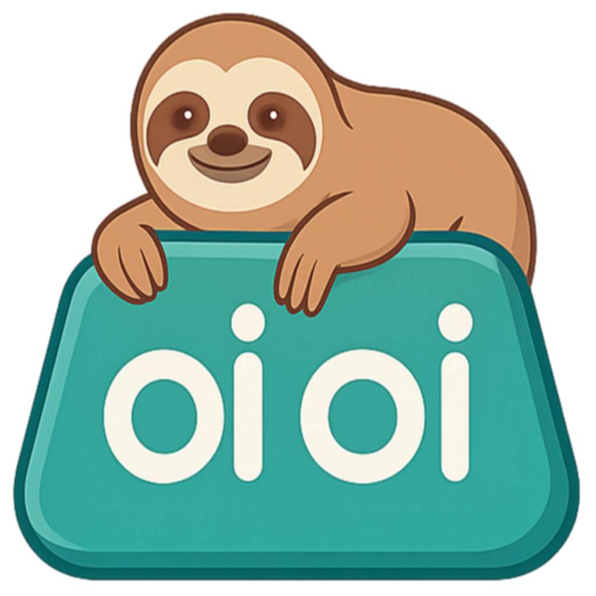

Real liquid glass
oioi captures the desktop behind the panel and blurs that — so it's genuine macOS-style glass, not a flat gray overlay faking it. Dial in blur, frost and corner radius until it's yours.

oioiA fast, glassy clipboard manager for macOS, Windows & Linux. Press ⌥V anywhere and your history floats up in real liquid glass — text, images, and files, searchable and one click away.
You copy a hundred things an hour. oioi keeps them, makes them searchable, and gives them back the moment you ask — without ever stealing focus from your work.
oioi captures the desktop behind the panel and blurs that — so it's genuine macOS-style glass, not a flat gray overlay faking it. Dial in blur, frost and corner radius until it's yours.
The panel is pre-warmed off-screen and painted low-res first. Press ⌥V and it's already there.
Heavy liquid glass, or a clean flat-white panel that needs zero screen permission. Switch anytime.
Everything you copy is captured, thumbnailed and instantly searchable. Filter down to exactly the type you need, today or all-time.
No Dock icon, no window clutter. oioi lives quietly in the menu bar — or the system tray on Windows and Linux — one global shortcut away.
No account, no telemetry, no subscription, no $99 Apple tax. MIT-licensed and every line is on GitHub.
Hit the global shortcut from any app, or click the menu-bar icon. The panel floats in over whatever you're doing.
Scroll your history or just start typing to search. Filter by Text, Images or Files — today or all-time.
Enter drops it straight back onto your clipboard, ready to paste wherever you were. Under a second, start to finish.
macOS 12+ · Windows 10+ · modern Linux. No account. No fee. No catch.
macOS is a Universal build (Apple Silicon + Intel). Windows (.exe) and Linux (.AppImage / .deb) live on the releases page.
oioi is free, so it isn't paid OS-vendor-signed — every OS shows a one-time "are you sure" the first time:
xattr -dr com.apple.quarantine /Applications/oioi.appchmod +x oioi-*.AppImage, then double-click or run it